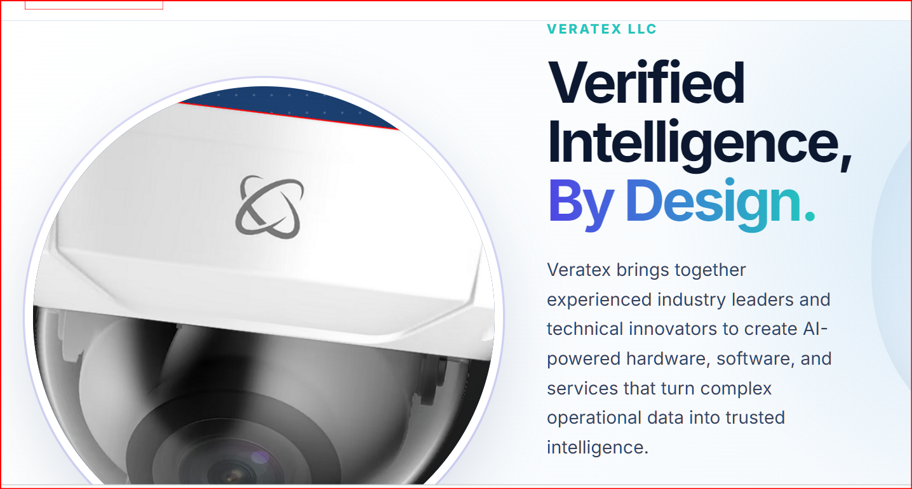

veratex LLC
Verified Intelligence,
By Design.
veratex brings together experienced industry leaders and technical innovators to create an AI reasoning layer that transforms surveillance video into trusted operational intelligence—without replacing Unity's existing infrastructure.
Executive Summary
A focused, low-risk extension of Unity's platform.
Unity already sits inside the surveillance rooms of major gaming operators. veratex adds a consensus-based AI reasoning layer on top of the camera and VMS feeds Unity already controls.
Three specialized AI analysts independently review the same video feed. A synthesis node cross-checks the findings, suppresses false positives, and returns verified output to the alert queue, incident report, and trend dashboard.
No new hardware. No rip-and-replace. No new console for operators to learn.
Continue to the opportunity →